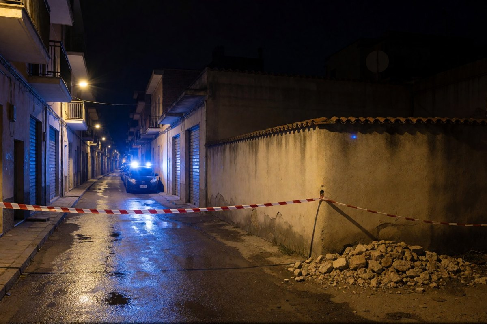

Sicilia · 12 novembre 2026
Catania, lite al chiosco e poi travolto con l'auto: un uomo fermato

Nel quartiere Barriera un cliente avrebbe colpito con un coltello il padre del titolare di un chiosco. Tre ore dopo il figlio lo avrebbe travolto in strada: è accusato di tentato omicidio, la vittima è in rianimazione.
di Franco Zanghì
La polizia ha fermato a Catania un uomo di 35 anni con l'accusa di tentato omicidio: secondo gli investigatori avrebbe travolto con l'auto, in via Pietro Novelli, la persona che poche ore prima aveva colpito suo padre. Il fermo è stato reso noto dall'ANSA il 13 novembre 2026; i fatti risalgono al pomeriggio del 12 novembre.
La lite
Tutto comincia nel chiosco di piazza del Carmelo, nel quartiere Barriera. Un cliente, 56 anni, pluripregiudicato e sottoposto agli arresti domiciliari, litiga con il padre del titolare dell'attività. Secondo la ricostruzione degli investigatori, durante la lite impugna un coltello e colpisce l'uomo, ferendolo di striscio, come riporta il sito NewSicilia.
La vendetta in strada
Il padre racconta l'accaduto al figlio. Circa tre ore dopo, sempre secondo gli investigatori, il figlio intercetta il cliente in via Pietro Novelli e lo travolge con l'auto che guida, schiacciandolo contro un muro.
L'uomo investito è stato trasferito all'ospedale Cannizzaro ed è ricoverato in rianimazione con prognosi riservata. Nell'impatto sono state danneggiate anche le tubature del gas: gli agenti delle volanti, intervenuti sul posto, hanno chiuso la strada.
Il fermo
Il guidatore, 35 anni e incensurato, messo alle strette dagli inquirenti ha ammesso le proprie responsabilità e ha reso dichiarazioni sui fatti, assistito dal suo avvocato. È accusato di tentato omicidio e, fino a sentenza definitiva, va considerato innocente.
Il fermo disposto dalla polizia dovrà ora essere convalidato dal giudice per le indagini preliminari, che deciderà anche se applicare una misura cautelare. Le indagini proseguono per ricostruire con esattezza la dinamica dell'investimento e i minuti che lo hanno preceduto.
Il punto
Nel giro di tre ore, in un quartiere popolare di Catania, una lite davanti a un chiosco è diventata prima una coltellata e poi un uomo schiacciato contro un muro. È la sequenza che gli investigatori contestano, e racconta una violenza che non passa dalle armi dei clan ma dai nervi di due famiglie del quartiere.
Resta una domanda che non riguarda i due uomini, ma il contesto: una persona sottoposta agli arresti domiciliari, a metà pomeriggio, era seduta al chiosco del quartiere. Chi controllava?
Fonti
- ANSA Sicilia, «Investe un uomo dopo una lite, fermato per tentato omicidio a Catania», 13 novembre 2026
- NewSicilia, cronaca del 13 novembre 2026, per la ferita di striscio e la dinamica
I nomi delle persone coinvolte non vengono riportati. Si tratta di un fermo nella fase delle indagini preliminari: vale la presunzione d'innocenza fino a sentenza definitiva. Versione scritta della notizia uscita sui canali dell'autore il 13 novembre 2026.